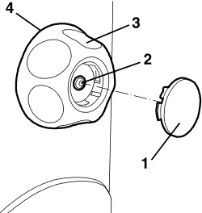

7045A25 FRONT SEAT BACKREST LUMBAR ADJUSTMENT KNOB (ONE), LEFT OR RIGHT - R.R.
- Path
- Procedures > 70 FITTINGS > 7045 FRONT SEATS > 7045A FRONT SEAT ASSEMBLY > 7045A25 FRONT SEAT BACKREST LUMBAR ADJUSTMENT KNOB (ONE), LEFT OR RIGHT - R.R.
- Kind
- repair procedure (removal / refitting; the operation number is the code)
- Applies to
- all engines; all production periods
- Interactive page
- https://sloeber94.github.io/elrnDB-aBrrSpdr/en/#/946004135
Applies to: all engines; all production periods
 Removing
Removing
 Refitting
Refitting- Place the seat in a suitable position.
1. Remove the cover, releasing the internal retainers.
2. Undo the bolt.
3. Remove the lumbar adjustment knob.
4. If necessary, remove the trim.

Applies to: all engines; all production periods
Refitting
Removing- Check that the knob is not damaged.
- If removed, fit the trim.
- Fit the knob and tighten the bolt.
- Refit the cover and attach the inner retainers.
- Place the seat in the correct position.
Topics that link to this page (9)
- 5580C44 FRONT SIDE BAG MODULE (ONE) LH OR RH - R.R
- 5580C86 SIDE BAG CABLE LOOM (ONE) LH OR RH - R.R OR REPLACE
- 7045A38 DRIVER'S SEAT BACKREST LUMBAR ADJUSTMENT DEVICE - R.R WITH SEAT REMOVED
- 7045A86 FRONT SEAT FRAME (ONE), LEFT OR RIGHT, R.R.
- 7045A87 FRONT SEAT BACKREST FOLDING DEVICE WITH FLEXIBLE CABLES, LEFT OR RIGHT - R.R. WITH FRONT SEAT REMOVED
- 7045B06 GUIDE BUSH FOR FRONT SEAT HEAD RESTRAINT (ONE), LEFT OR RIGHT - R.R.
- 7045D30 FRONT SEAT BACKREST COVER, LEFT OR RIGHT - R.R.
- 7045D31 FRONT SEAT BACKREST COVER, LEFT OR RIGHT - R.R. WITH SEAT REMOVED
- 7045M26 FRONT SEAT BACKREST HEATER PAD, LEFT OR RIGHT - R.R. FOLLOWING ELECTRICAL CIRCUIT CHECK